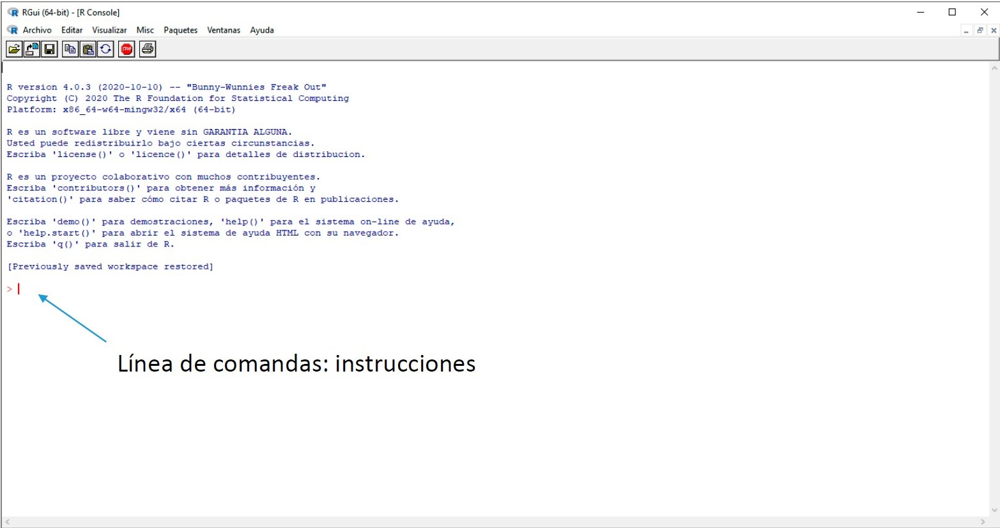

Fundamentos de R
Andres Felipe Beltran
4/19/2021

J.D. Long
Por qué aprender R?
- Nos conecta con una comunidad genial.
- La programación es un super poder al cual todos tenemos acceso.
- Podemos limpiar, analizar, graficar y comunicarnos con nuestros datos, todo en un solo sitio.
- Automatización.
- Es gratis!

Introducción: R
R es un entorno de programación libre y multiplataforma para cálculos estadísticos y representaciones gráficas
Desarrollado por Ross Ihaka y Robert Gentleman a principios de los 90 en la Universidad de Auckland, Nueva Zelanda
Más adelante, paso a ser parte del proyecto GNU soportado por la Fundación para la computación estadística (FSC) y ha incrementado su popularidad.
Página web del proyecto: https://www.r-project.org
Introducción: R
La consola de R

Introducción: RStudio
R Studio es un entorno de desarrollo integrado (IDE) de código abierto para el lenguaje de programación R.
Facilita el trabajo con R (no es imprescindible), incluye:
- Consola
- Editor de textos
- Herramientas para el trazado, la depuración y gestión del espacio de trabajo.
Página web: https://www.rstudio.com
Introducción: RStudio
La ventana de trabajo proporciona mucha mas información:

Introducción al trabajo con R
Propiedades de una sesión de trabajo
R guarda el ‘espacio de trabajo’ (workspace/environment) en el ‘directorio de trabajo’
Para saber lo que hay en el workspace: ls()
Introducción al trabajo con R
Primeras operaciones con R: operaciones básicas
Se pueden ejecutar tanto en la linea de comandos como en la ventana de scripts
## [1] 38Ventana de scripts: escribir la instrucción y Run (Ctrl + Enter)
Asignación (dar un valor a una variable)
da a x el valor de 6
da a y el valor de un vector formado por los numeros 1, 2 y 3
Si preguntamos el valor de y:
## [1] 1 2 3R contiene una serie (grande) de funciones que permiten realizar de forma simple operaciones básicas
Considerando la y definida anteriormente:
## [1] 6Suma los elementos de y
## [1] 2calcula la media de los elementos de y
También se puede asignar a una nueva variable
## [1] 2Ayuda (help) de funciones
Menús desplegables predictivos que permiten elegir opciones de nombres (o variables) para que sea más intuitivo
Primeras operaciones con R: funciones basicas
Sintaxis:
Nombre y parentesis siempre
Aconstumbran a tener un número variable de argumentos.
Si se llama a los argumentos:
Implica que arg1 = 6, arg2 = 3, arg3 = 1 lo que se llama ‘referencia posicional’
Si se llama a los argumentos:
define argumentos sin tener en cuenta el orden ‘referencia por claves’
Ademas, R permite al usuario crear fácilmente funciones propias
por ejemplo, multiplicar dos valores
## [1] 6Primeras operaciones con R
No siempre los datos que analizamos son completos
En R, estos valores se representan con el codigo NA (not available)
## [1] 4 12 14 NA 11Poblema: Pueden las funciones trabajar con estos valores? (probar sum o mean)
## [1] NAUn parámetro (argumento) de las funciones para no tener en cuenta los NA:
## [1] 10.25Identificación de valores: is.na()
## [1] FALSE FALSE FALSE TRUE FALSEEstructuras de R
Vector
Conjunto de elementos (componentes) de datos del mismo tipo
Números:
## [1] 1 2 3 4texto: ciudades
Lógico
Acceso a elementos (entre corchetes []): ciudades[1]
## [1] "Salento"Vectores Numéricos
Existen funciones especiales para la creación de vectores numéricos:
secuencia :
## [1] 1 2 3 4 5 6 7 8 9 10 11 12 13 14 15 16 17 18 19 20 21 22 23 24 25## [1] 5 10 15 20 25 30 35 40 45 50Alternativa si se va de uno en uno:
## [1] 1 2 3 4 5 6 7 8 9 10 11 12 13 14 15 16 17 18 19 20 21 22 23 24 25Repetición
## [1] 1 2 3 4 5 1 2 3 4 5 1 2 3 4 5Matrices
tabla 2D de elementos del mismo tipo
Creación de matrices: primero un vector con el contenido
## [,1] [,2] [,3] [,4]
## [1,] 1 6 11 16
## [2,] 2 7 12 17
## [3,] 3 8 13 18
## [4,] 4 9 14 19
## [5,] 5 10 15 20Trasposición
## [,1] [,2] [,3] [,4]
## [1,] 1 6 11 16
## [2,] 2 7 12 17
## [3,] 3 8 13 18
## [4,] 4 9 14 19
## [5,] 5 10 15 20## [,1] [,2] [,3] [,4] [,5]
## [1,] 1 2 3 4 5
## [2,] 6 7 8 9 10
## [3,] 11 12 13 14 15
## [4,] 16 17 18 19 20Listas
Una lista es una coleccion de objetos, y cada uno de ellos puede ser de diferente tipo o clase
## [[1]]
## [1] 1
##
## [[2]]
## [1] 1 2 3
##
## [[3]]
## [1] "hola"Acceso a los elementos con doble corchete:
## [1] 1Lista con nombre de los elementos:
Acceso a los elementos con $nombre
## [1] 1 2 3¿Importancia de las listas?
Muchas de las funciones estadísticas con las que trabajaremos proporcionan su salida en forma de lista.